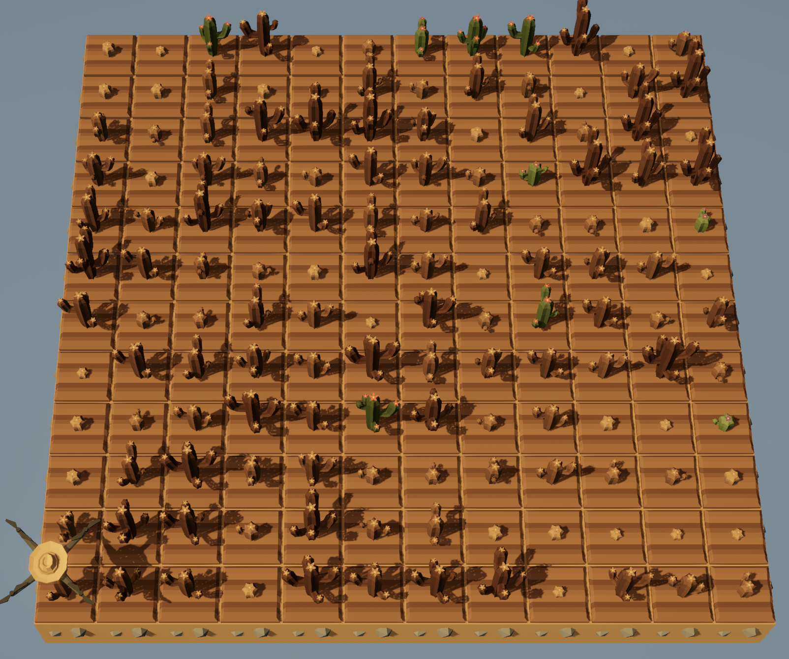
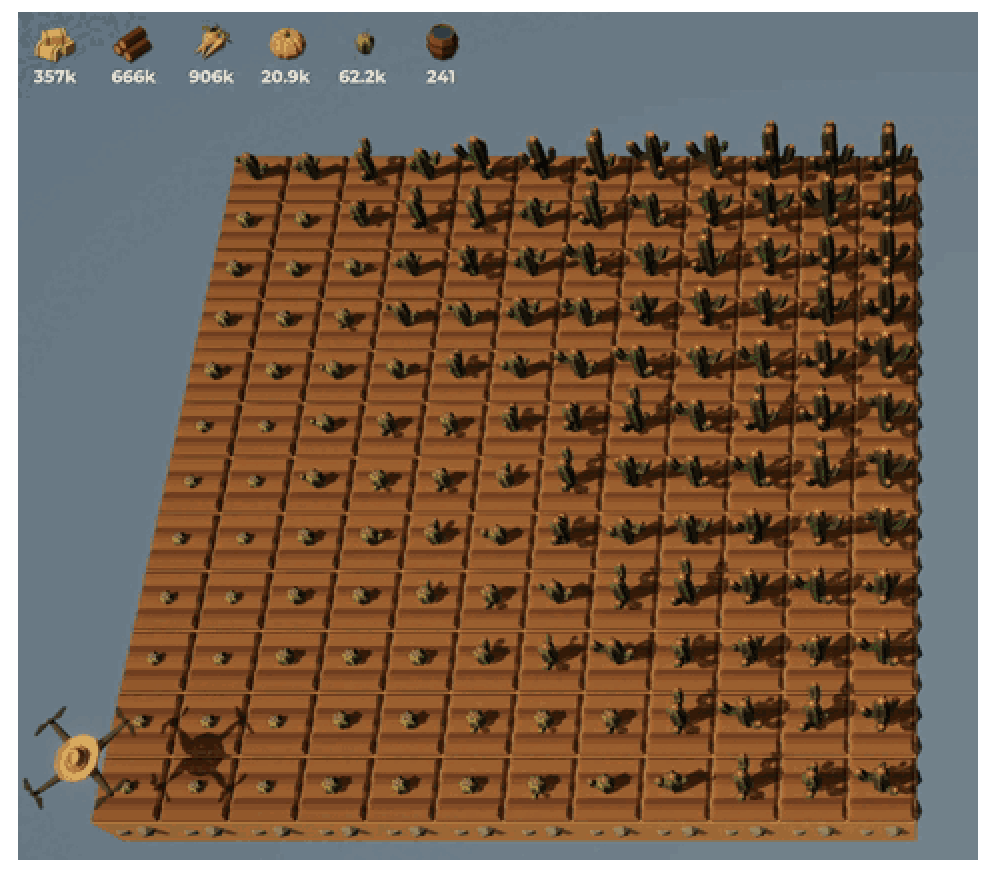
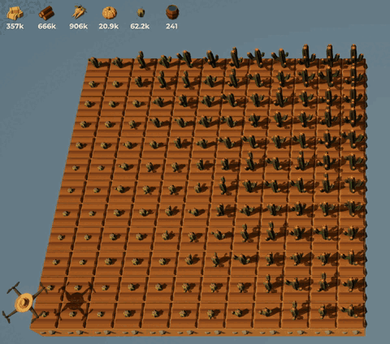
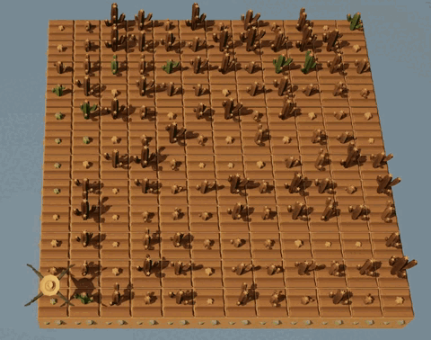
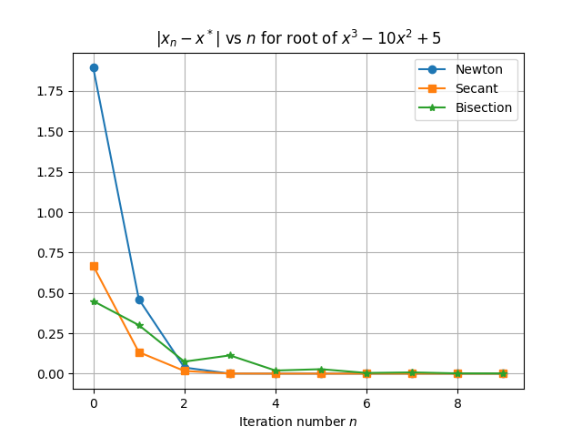
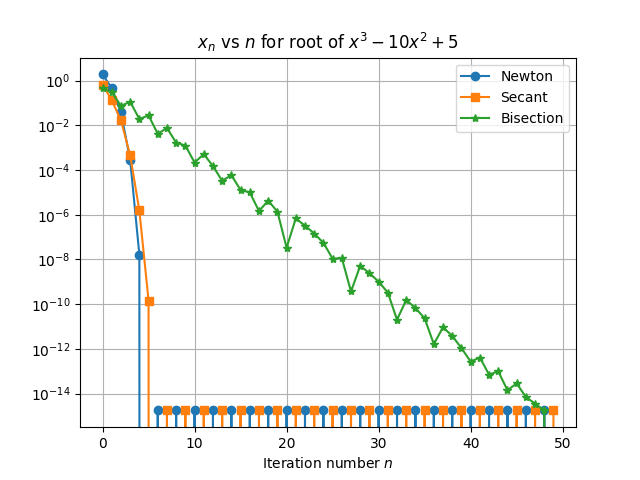
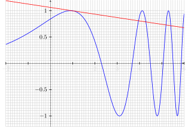
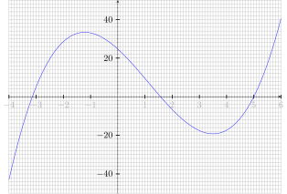
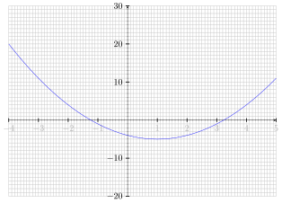
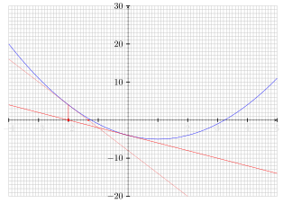

HW 7
ENGR 21, Fall 2026.
Solutions
1 The Farmer Was Replaced
Download the save file here to ensure that you’ve unlocked all that’s required for this assignment.
1.1 Sorting Cacti
Cacti grow best when they are sorted. In TFWR, sorted cacti are those which are arranged in order of size relative to their neighboring cacti: the smallest cacti should be on the south and west, and largest cacti should be to the north and east.
You can check the size of the cactus underneath your drone using the function measure(), which returns an integer from 1 to 9. If you call measure with an argument, you can also measure the neighboring cacti (without moving your drone). For example, measure(East) measures the cactus to the East of the current location of the drone.
The swap(<direction>) function swaps the cactus underneath the dronw for the cactus located <direction> away from the drone. For example, swap(North) swaps the cactus underneath the drone with a cactus to the north of the drone.


Write a program that plants cacti on the entire farm, then sorts them into the correct order, then harvests them. It need only do this once.
Your code should work ‘out of the box’, regardless of whether the farm is tilled or not. You can either
- use
clear()and start from an untilled farm, and till each spot - check the soil type and only
till()if needed.
The precise sorting algorithm you use is not necessarily important. This is not a Computer Science class, so your algorithm does not need to be the most efficient one in the world, as long as it works correctly and accomplishes its objective.
You have succeeded when the entire farm of cacti can be harvested in a single ‘poof’, as seen in Figure 1. Also notice that cacti are green when sorted and brown when unsorted.

On the class website you can see an example sorting algorithm in action in Figure 2. Here, the drone works hard to sort the farm. It accomplishes its objective by first sorting each row, then sorting the columns.

You can also find this gif in video format hosted at Panopto at the following link. This will allow you to have better control over the playback of the animation in Figure 2.
The following code plants pumpkins on the entire field.
def zeroloc():
xdist = get_pos_x()
ydist = get_pos_y()
for i in range(xdist):
move(West)
for i in range(ydist):
move(South)
return None
# Harvest anything remaining,
# till if necessary, and plant
# cacti.
zeroloc()
for j in range(get_world_size()):
for k in range(get_world_size()):
if can_harvest():
harvest()
if get_ground_type() == Grounds.Grassland:
till()
plant(Entities.Cactus)
move(East)
move(North)The following code sorts the field.
# Sort horizontally first
for j in range(get_world_size()):
while True:
count_ok = 1
for i in range(get_world_size()):
move(East)
if measure() < measure(West):
swap(West)
else:
count_ok += 1
if count_ok == get_world_size():
break
move(North)
# Sort vertically next
for j in range(get_world_size()):
while True:
count_ok = 1
for i in range(get_world_size()):
move(North)
if measure() < measure(South):
swap(South)
else:
count_ok += 1
if count_ok == get_world_size():
break
move(East)The following code harvests it all.
# Should now be done. Harvest the fruits of your labor!
do_a_flip()
print("All cacti sorted!")
harvest()2 Convergence of root-finding methods
The code given below compares the performance of three root-finding algorithms for finding a root (which we call \(x^*\)) of the function \(f(x) = x^3 - 10x^2 + 5\) near \(x=8\). Each method is run for ten iterations. The numerical methods have not been correctly implemented, however, and the resulting figure is different from the desired one.
The true value of the root is apprxoimately 9.949491057914386
Modify the code to accomplish the following objectives.
- Correctly implement all three root-finding algorithms
- Create a graph of \(|x_n-x^*|\) against \(n\), plotted on the usual linear axes. \(n\) should go up to 10.
- Create a graph of \(|x_n-x^*|\) against \(n\), plotted on a logarithmic scale on the vertical axis. For this graph, \(n\) should go up to 50. See the documentation for
semilogy.
import numpy as np
import matplotlib.pyplot as plt
f2 = lambda x: x**3 - 10 * x**2 + 5
fp2 = lambda x: -20 * x + 3 * x**2
N = 10
x_newton = np.zeros(N)
x_secant = np.zeros(N)
x_bisect = np.zeros(N)
xold = 8
# Newton iterations
for i in range(N):
xnew = xold - f2(xold)/fp2(xold)
xnew = xold
x_newton[i] = xnew
# Secant iterations
x1 = 8
x2 = 9
for i in range(N):
m = (f2(x2)-f2(x1))/(x2-x1)
c = f2(x1) - m*x1
xnew = c/m
x1 = x2
x2 = xnew
x_secant[i] = xnew
# Bisection iterations
xL = 8
xR = 11
for i in range(N):
xM = (xL+xR)/2
fxL = f2(xL)
fxR = f2(xR)
fxM = f2(xM)
x_bisect[i] = xM
if np.sign(xL) == np.sign(xM):
# search in right side
xL = xM
elif np.sign(xR) == np.sign(xM):
# search in left side
xR = xM
# Plot x value against step
plt.plot(x_newton,marker="o")
plt.plot(x_secant,marker="s")
plt.plot(x_bisect,marker="*")
plt.legend(["Newton","Secant","Bisection"])
plt.title("$x_n$ vs $n$ for root of $x^3-10x^2+5$")
plt.xlabel("Iteration number $n$")
plt.grid(visible=True)
plt.savefig("test.png")
plt.show()The following snippets of code correctly solve this problem. It’s a little more verbose than it needs to be, and has been divided into two scripts below for convenience.
import numpy as np
import matplotlib.pyplot as plt
f2 = lambda x: x**3 - 10 * x**2 + 5
fp2 = lambda x: -20 * x + 3 * x**2
# ---- First graph, linear scale ---- #
N = 10
x_newton = np.zeros(N)
x_secant = np.zeros(N)
x_bisect = np.zeros(N)
xold = 8
# Newton iterations
for i in range(N):
xnew = xold - f2(xold)/fp2(xold)
xold = xnew
x_newton[i] = xnew
# Secant iterations
x1 = 8
x2 = 9
for i in range(N):
m = (f2(x2)-f2(x1))/(x2-x1)
c = f2(x1) - m*x1
xnew = -c/m
x1 = xnew
x_secant[i] = xnew
# Bisection iterations
xL = 8
xR = 11
for i in range(N):
xM = (xL+xR)/2
fxL = f2(xL)
fxR = f2(xR)
fxM = f2(xM)
x_bisect[i] = xM
if np.sign(fxL) == np.sign(fxM):
# search in right side
print("Right side!")
xL = xM
elif np.sign(fxR) == np.sign(fxM):
# search in left side
print("Left side!")
xR = xM
# Plot difference versus true value against step
true_value = 9.949491057914386
plt.plot(abs(x_newton-true_value),marker="o")
plt.plot(abs(x_secant-true_value),marker="s")
plt.plot(abs(x_bisect-true_value),marker="*")
plt.legend(["Newton","Secant","Bisection"])
plt.title("$|x_n - x^*|$ vs $n$ for root of $x^3-10x^2+5$")
plt.xlabel("Iteration number $n$")
plt.grid(visible=True)
plt.show()# ---- Second graph, log scale ---- #
N = 50
x_newton = np.zeros(N)
x_secant = np.zeros(N)
x_bisect = np.zeros(N)
xold = 8
# Newton iterations
for i in range(N):
xnew = xold - f2(xold)/fp2(xold)
xold = xnew
x_newton[i] = xnew
# Secant iterations
x1 = 8
x2 = 9
for i in range(N):
m = (f2(x2)-f2(x1))/(x2-x1)
c = f2(x1) - m*x1
xnew = -c/m
x1 = xnew
x_secant[i] = xnew
# Bisection iterations
xL = 8
xR = 11
for i in range(N):
xM = (xL+xR)/2
fxL = f2(xL)
fxR = f2(xR)
fxM = f2(xM)
x_bisect[i] = xM
if np.sign(fxL) == np.sign(fxM):
# search in right side
xL = xM
elif np.sign(fxR) == np.sign(fxM):
# search in left side
xR = xM
true_value = 9.949491057914386
plt.semilogy(np.arange(N),abs(x_newton-true_value),marker="o")
plt.semilogy(np.arange(N),abs(x_secant-true_value),marker="s")
plt.semilogy(np.arange(N),abs(x_bisect-true_value),marker="*")
plt.legend(["Newton","Secant","Bisection"])
plt.title("$x_n$ vs $n$ for root of $x^3-10x^2+5$")
plt.xlabel("Iteration number $n$")
plt.grid(visible=True)
plt.show()The resulting graphs look like this


3 A Python program for the Secant method
Combine all code for this problem into a single file.
3.1 Write a function
Write a Python function named secant_method(...) that takes as input the following 4 arguments, in order:
- A function
f, whose root is to be found. x1, one estimate of the rootx2, another estimate of the rootn, the number of steps of the secant method that are to be carried out.
It should output a guess for the root of \(f(x)\).
A Python function can be an argument to another function. For example, the following function takes as input the independent variable \(x\) and the function \(g\), and returns \(g^2(x) = g(x) \times g(x)\)
from numpy import sin
def square(func,xval):
return func(xval)*func(xval)
print(f"{square(sin,2):.3f}")3.2 Use your function
Use your function to determine a root of the function \(\sin e^{x/2}\) starting from \(x=1\) and \(x=2\) as your initial guesses. For this part, your code should call the function you wrote in Section 3.1 and should print a value for the root.
3.3 Solution
The following code is a satisfactory solution to this problem.
def secant(f,x1,x2,n):
for i in range(n):
m = (f(x2)-f(x1))/(x2-x1)
c = f(x1) - m*x1
xnew = -c/m
x1 = x2
x2 = xnew
return xnew
# Test it on the desired function
from numpy import sin,exp
def f_test(x):
return sin(exp(x/2))
# Call the function
print(f"The function sin(exp(x/2)) has a root at x = {secant(f_test,1,2,10):.3f}")4 A Python program for Newton’s method
4.1 Write a function
Write a Python function named newtons_method(...) for Newton’s method that accepts as argument the following four entities in order:
- The function \(f(x)\) whose root is to be found,
- The function \(f'(x)\), its derivative,
- A guess \(x_0\) from which to start calculations, and
- A tolerance parameter \(\varepsilon\).
Given a function \(f\) and its derivative \(f'\), your Python function should apply Newton’s method to find a root of \(f(x)\) starting from \(x=x_0\). It should continue searching for a root until the following termination criterion has been met. After termination, it should return the latest guess of the root’s value.
Terminate the search for a root when \[\frac{|x_{n+1} - x_{n}|}{|x_n|} < \varepsilon,\] where \(\varepsilon\) is a tolerance parameter that is generally a small number.
A smaller \(\varepsilon\) will lead to a more accurate solution.
4.2 Use your function
Use your function to find a root of \(f(x) = \sin e^{x/2}\), starting from (1) \(x_0=2\) and (2) \(x_0 = 1\). Write print statements to report to a user the results of your calculations.
The following code is a satisfactory solution to this problem, with the added (unnecessary) feature that it counts the number of iterations it took to find the answer.
def newton(f,fp,x0,epsilon):
error = 1
xold = x0
count_iters = 0
while error > epsilon:
# Calculate the new value of x
xnew = xold - f(xold)/fp(xold)
# Calculate error
error = (abs(xnew-xold))/(abs(xold))
# Update memory; forget old value
xold = xnew
# Count
count_iters += 1
print(f"Newton's method terminated after {count_iters} iters.")
return xnew
from numpy import sin,exp,cos
# Define a function whose root will be looked for.
def f1(x):
return sin(exp(x/2))
# Need its derivative also
def f1p(x):
return (1/2) * exp(x/2) * cos(exp(x/2))
# From x = 2
xval = 2
print(f"Starting from x = {xval}, Newton's method finds the root {newton(f1,f1p,xval,1e-6):.6f}")
# From x = 1
xval = 1
print(f"Starting from x = {xval}, Newton's method finds the root {newton(f1,f1p,xval,1e-6):.6f}")We find the following result:
Newton's method terminated after 4 iters.
Starting from x = 2, Newton's method finds the root 2.289460
Newton's method terminated after 4 iters.
Starting from x = 1, Newton's method finds the root 16.535193This is because the function in question has many zeros.
The following sketch shows that the straight line will only intercept the \(x\) axis very far from the initial guess, since it is close to a turning point of \(f(x)\).

4.3 Explain its behavior
By using a graph of the function \(\sin e^{x/2},\) explain the results from Section 4.2. Why does the program find the results it does? Sketch a few steps of Newton’s method by hand to aid in your explanation.
5 Graphical Illustration of Root-finding
5.1 Bisection Method for \(f(x) = (x+\pi)(x-\pi/2)(x-5)\)
5.1.1 Bisection Method with numbers
A root of the function \(f(x) = (x+\pi)(x-\pi/2)(x-5)\) is to be found using the bisection method starting from the bracket \([-4,-3]\). Use the following table to record the results of the bisection method for six steps. Some steps have been done for you.
| \([x_L, \quad \qquad \qquad x_M, \qquad \qquad \quad x_R]\) | \([f(x_L), \quad f(x_M), \quad f(x_R)]\) | Next bracket |
|---|---|---|
| \([-4.0000000, \, -3.5000000, \,-3.0000000]\) | \([-43.0, \quad -15.4, \quad +5.18 ]\) | right bracket |
| \([-3.5000000, \, -3.2500000, \,-3.0000000]\) | \([-15.4, \quad -4.31, \quad +5.18 ]\) | right bracket |
| \([-3.2500000, \, -3.1250000, \,-3.0000000]\) | \([-4.31, \quad +0.63, \quad +5.18 ]\) | left bracket |
| \([-3.2500000, \, -3.1875000, \,-3.1250000]\) | \([-4.31, \quad -1.79, \quad +0.63 ]\) | right bracket |
| \([-3.1875000, \, -3.1562500, \,-3.1250000]\) | \([-1.79, \quad -0.56, \quad +0.63 ]\) | right bracket |
| \([-3.1562500, \, -3.1406250, \,-3.1250000]\) | \([-0.56, \quad +0.04, \quad +0.63 ]\) | right bracket |
| \([-3.1562500, \, -3.1484375, \,-3.1406250]\) | \([-1.26, \quad -0.26, \quad +0.04 ]\) | right bracket |
5.1.2 Bisection method with pictures
Using hand-calculations and a simple calculator, explain how the bisection algorithm will behave when initialized with each of the following brackets. For each case, indicate whether or not it will converge on a solution, and if so, which root it will converge on. Illustrate graphically on the given axes.
- \([-4,-2]\)
- \([-4,+2]\)
- \([-4,+6]\)
- \([0,+4.9]\)
- \([+2,+4]\)
You may use the following diagram to solve this problem.

- You start with the bracket \([-4,-2]\)
- This interval ‘brackets’ the root \(x = -\pi\), and the algorithm will eventually converge on this root.
- You start with the bracket \([-4,+2]\)
- This interval cannot work because \(f(-4)\) and \(f(+2)\) both have the same sign. The algorithm has no way of deciding which half of the interval to proceed with.
- You start with the bracket \([-4,+6]\)
- This interval brackets multiple roots, but \(f(-4)\) and \(f(+6)\) have different signs, so it is a valid initial bracket. The midpoint of this interval is $x = +1, and we note that \(f(+1)\) has a positive sign. Thus, the next bracket chosen will be the left-side half, i.e., \([-4,+1]\). This brackets the root \(x = - \pi\), and the algorithm will eventually find that root.
- You start with the bracket \([0,+4.9]\)
- This interval brackets the root \(x = \pi/2\), and the algorithm will eventually converge on this root.
- You start with the bracket \([+2,+4]\) -This interval does not bracket any root, so it is not a valid starting interval. No root will be found.
5.2 Newton’s Method
Use Newton’s method to graphically (i.e., with a pencil and straight edge) find the root of the function \(x^2 - 2x - 4\), starting from the estimate that the root is at \(x_0=0\). Find the next two estimates according to Newton’s method.

The following graph adequately solves this problem. The two subsequent guesses are: \[x_0 = 0, x_1 = -2, x_2 \approx -1.34\]
